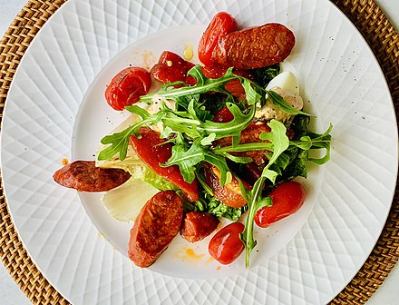
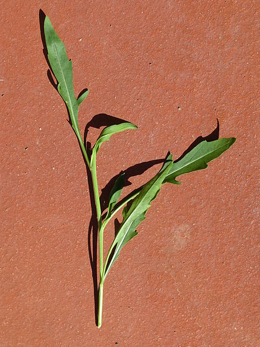
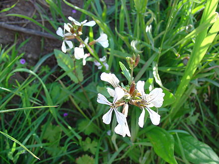

Arugula (American English) or rocket (British English) is an edible annual plant
in the family Brassicaceae used as a leaf vegetable for its fresh, tart, bitter, and peppery flavor.
Other common names include garden rocket[1]
(in Britain, Australia, South Africa, Ireland, and New Zealand),[2] and eruca.
It is also called ruchetta, rucola, rucoli, rugula, colewort, and roquette. Eruca sativa, which is widely popular as a salad vegetable,
is a species of Eruca native to the Mediterranean region,
from Morocco and Portugal in the west to Syria, Lebanon, Egypt and Turkey in the east.

Rocket in a salad with chorizo, eggs and tomatoes
Eruca vesicaria is an annual plant
growing to 20 to 100 centimetres (8 to 40 inches) in height. The pinnate
leaves are deeply lobed with four to ten small lateral lobes and a large terminal lobe.
The flowers are 2cm to 4cm in diameter,
arranged in a corymb,
with the typical Brassicaceae flower structure.
The petals are creamy white with purple veins, and the stamens yellow.
The fruit is a siliqua (pod)
12 to 25 mm long with an apical beak, containing several seeds (which are edible). The species has a
chromosome number of 2n = 22.

Arugula Leaves
The Latin adjective sativa in the plant's binomial name is derived from satum, the supine of the verb sero, meaning "to sow", indicating that the seeds of the plant were sown in gardens. Eruca sativa differs from E. vesicaria in having early deciduous sepals. Some botanists consider it a subspecies of Eruca vesicaria: E. vesicaria subsp. sativa. Still others do not differentiate between the two.
Eruca vesicaria typically grows on dry, disturbed ground. It is a source of food for the larvae of some moth species, including the garden carpet, and its roots are susceptible to nematode infestation.
A pungent, leafy green vegetable resembling a longer-leaved and open lettuce, Eruca vesicaria is rich in vitamin C and potassium. In addition to the leaves, the flowers, young seed pods and mature seeds are all edible.
Grown as an edible and popular herb in Italy since Roman times, it was mentioned by various ancient Roman classical authors as an aphrodisiac,most famously in a poem long ascribed to the famous 1st century Roman poet Virgil, Moretum, which contains the line: "et Venerem revocans eruca morantem" ("and the rocket, which revives drowsy Venus [sexual desire]"), and in the Ars Amatoria of Ovid. Some writers assert that for this reason during the Middle Ages it was forbidden to grow rocket in monasteries. It was listed, however, in a decree by Charlemagne of 802 as one of the pot herbs suitable for growing in gardens. Gillian Riley, author of the Oxford Companion to Italian Food, states that because of its reputation as a sexual stimulant, it was "prudently mixed with lettuce, which was the opposite" (i.e., calming or even soporific). Riley continues that "nowadays rocket is enjoyed innocently in mixed salads, to which it adds a pleasing pungency", though Norman Douglas insisted that “Salad rocket is certainly a stimulant”.
Rocket was traditionally collected in the wild or grown in home gardens along with such herbs as parsley and basil. It is now grown commercially in many places, and is available for purchase in supermarkets and farmers' markets throughout the world. It is also naturalized as a wild plant away from its native range in temperate regions around the world, including northern Europe and North America.[19][2] In India, the mature seeds are known as Gargeer. This is the same name in Arabic, جِرْجِير (jirjīr), but used in Arab countries for the fresh leaves.
Mild frost conditions hinder the plant's growth and turn the green leaves red.
Since Roman times in Italy, raw rocket has been added to salads. It is often added to a pizza at the end of or just after baking. It is also used cooked in Apulia, in southern Italy, to make the pasta dish cavatiéddi, "in which large amounts of coarsely chopped rocket are added to pasta seasoned with a homemade reduced tomato sauce and pecorino", as well as in "many unpretentious recipes in which it is added, chopped, to sauces and cooked dishes" or in a sauce (made by frying it in olive oil and garlic) used as a condiment for cold meats and fish. Throughout Italy it is used as a salad with tomatoes, and with either burrata, bocconcini, buffalo and mozzarella cheese. In Rome, rucola is used in straccetti, a dish of thin slices of beef with raw rocket and Parmesan cheese.
In Turkey, similarly, the rocket is eaten raw as a side dish or salad with fish, but is additionally served with a sauce of extra virgin olive oil and lemon juice.
In Slovenia, rocket is often combined with boiled potatoes or used in a soup.
In West Asia, Pakistan and Northern India, Eruca seeds are pressed to make taramira oil, used in pickling and (after aging to remove acridity) as a salad or cooking oil. The seed cake is also used as animal feed.
Raw arugula is 92% water, 4% carbohydrates, 2.5% protein, and contains a negligible amount of fat. Although a 100-gram reference serving provides only 105 kilojoules (25 kilocalories) of food energy, arugula has a high nutritional value, especially when fresh, frozen, steamed, or quickly boiled. It is a rich source (20% or more of the Daily Value, DV) of folate and vitamin K. Arugula is also a good source (10–19% of DV) of vitamin A, vitamin C, and the dietary minerals calcium, magnesium, and manganese.
Marita Blake, Capicollo Ham
Hanna Proctor, American Cheese
Jewels Vang, Gouda Cheese
Aidan Jones, Avocado
Sai Ma, Turkey Ham
Caitlin Mullenix, Pickles
Jackson Fox-Bland, Egg
Nate Buchholz, Mayonnaise
Brody Cyphers, Grilled Sausage
Charlie Nevitt, Hot Giardiniera
Robby Strong, Lox
Jessica Lieu, Bacon
